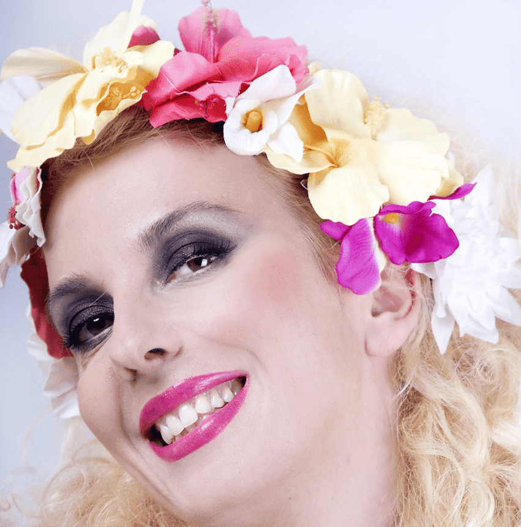
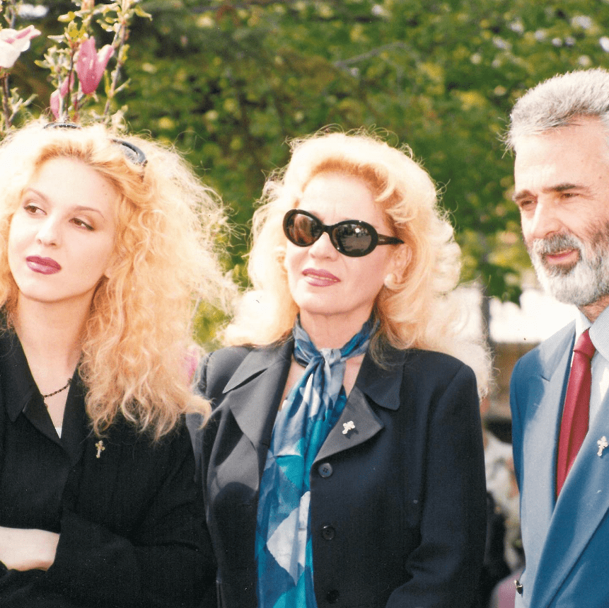

Летња прича Иване Михић објављена у дневном листу
Политика
♱
Годинама са
родитељима посећујући манастир Рајиновац, сасвим спонтано је постала и волонтер.
Манастир Рајиновац надомак Гроцке, у Бегаљици, посећујем од раног детињства. Налази се на
обронку Бегаљичког брда, окружен манастирским воћњацима, а у подножју поред самог манастира је
извор чудотворне воде, прича за „Политику” глумица Ивана Михић, која често посећује ово
манастирско здање, што се први пут помиње још у 16. веку, и „спас” од јулске врелине проналази у
његовој непосредној близини где има породичну кућу. Драмски писац и сценариста Гордан Михић
(1938–2019), свој мир пронашао је управо на гробљу манастира Рајиновац, будући да је то била
његова последња жеља.

фото: @ivana_mihic_official/instagram
-Име Рајиновац манастир је добио по извесном момку Раји који је радио код локалног богаташа. По
легенди, Раја је добивши своју месечну накнаду за рад кренуо путем ка својој кући где су га
поред потока пресрели газдини синови, опљачкали и убили. Очајан због суровог поступка своје деце
газда је у жељи да окаје њихове грехе за исту суму отетог новца несрећном Раји подигао дрвену
црквицу надомак потока где је момак издахнуо. Име Рајиновац народ је дао јер је легенда говорила
да је црква подигнута од Рајиног новца. Извор воде постоји и данас и верује се да је његова
водица света и да има снажне исцелитељске моћи, посебно код оних са проблемом са видом и других
телесних болести – беседи Ивана Михић и додаје:
-Још једну драгоценост има овај манастир, а то је икона Пресвете Богородице Рајиновачке која,
како се верује, помаже многима који не могу да имају потомство. Оно што је мање познато јесте и
то да су овде један период почивале мошти српског краља Стефана Првовенчаног. Манастир има и
честицу Светог Луке, као и честице још два светитеља. Стар више стотина година, манастир је
неколико пута рушен, паљен и изнова обнављан у свој својој лепоти. Посвећен је рођењу Пресвете
Богородице. У манастиру живе монахиње, а од пре три године и старешина: игуман архимандрит
Серафим Кужић.
Њени родитељи (Вера Чукић и Гордан Михић), казује наша саговорница, често су заједно одлазили у
Рајиновац, посећивали цркву и волели радо да поседе испод крошњи дрвећа, говорећи како их обузме
неки посебан спокој и испуни благост. Монахиње су говориле да је ту често долазио и имао своју
собу и патријарх Павле.
– Мој отац, писац и хуманиста Гордан Михић преминуо је 11. августа 2019. године и уз благослов
патријарха Иринеја и добру вољу епископа Стефана Шарића, на манастирском гробљу пронашао је свој
вечни мир. Са места на коме почива може да се види велики део Србије, а чини ми се да га током
целог дана обасјава сунчева светлост – каже Ивана Михић и додаје:
– Моја мајка Вера Чукић и ја, у последње три године веома често долазимо у Рајиновац.
Архимандрит Серафим, који нам се нашао као подршка у времену када смо остале без нашег Гордана,
за ове три године постао је и наш блиски пријатељ. Његова доброта, пожртвованост и спремност на
велике замахе у побољшању услова живота у самом конаку и манастирском поседу, као и обнова цркве
и чување њених реликвија и светих драгоцености импонује.

фото: @ivana_mihic_official/instagram
Глумица додаје да је из њиховог пријатељства, кроз међусобне разговоре, размењивање идеја о
могућностима унапређења, потребама поправки, реновирања, свакодневних животних потреба манастира
– сасвим спонтано и волонтер манастира.
– Како сам се бавила филмском продукцијом и још низом организационих послова, стекла сам
контакте који су могли да помогну игуману Серафиму. Тако смо се заједно обратили Министарству
културе РС и на састанку са министарком Мајом Гојковић договорили значајну материјалну помоћ
намењену изградњи и обнови манастирске, некада познате библиотеке, као и обнови дрвенарије на
цркви – вели Ивана Михић и наводи:
– Тих дана, када је почела изградња библиотеке, стигла је и невероватна донација из Белгије од
наше породичне пријатељице, госпође Марије Јовановић, која је библиотеку даривала са 1.000
драгоцених издања књига њеног покојног супруга Станоја Јовановића. Такође, овог месеца завршено
је и асфалтирање приступног пута, као и стаза кроз парк, што је била огромна донација „Београд
пута” и ЈП „Путеви Београда”. За све ово време игуман Серафим је поред других послова сам
обновио капелу радећи са својим братом и физичке и мајсторске послове. Као старешина манастира
он сам и коси траву, орезује грање… а уз госпођу Кату и улепшава парк.
Постоји још много послова, казује Ивана Михић, за које су неопходне донације добрих људи и
предузећа. Пре свега, најхитнија је дренажа око темеља цркве. Ништа мање важна је и промена
крова на цркви. То су есенцијалне потребе јер идемо у сусрет зими. Након тога на реду је
реновирање гробља. Оно се налази на брдашцету изнад цркве, чији део је клизиште које се мора
санирати и обезбедити. Дакле, много посла је пред игуманом Серафимом, а Ивана Михић се, каже,
труди да колико може помогне.